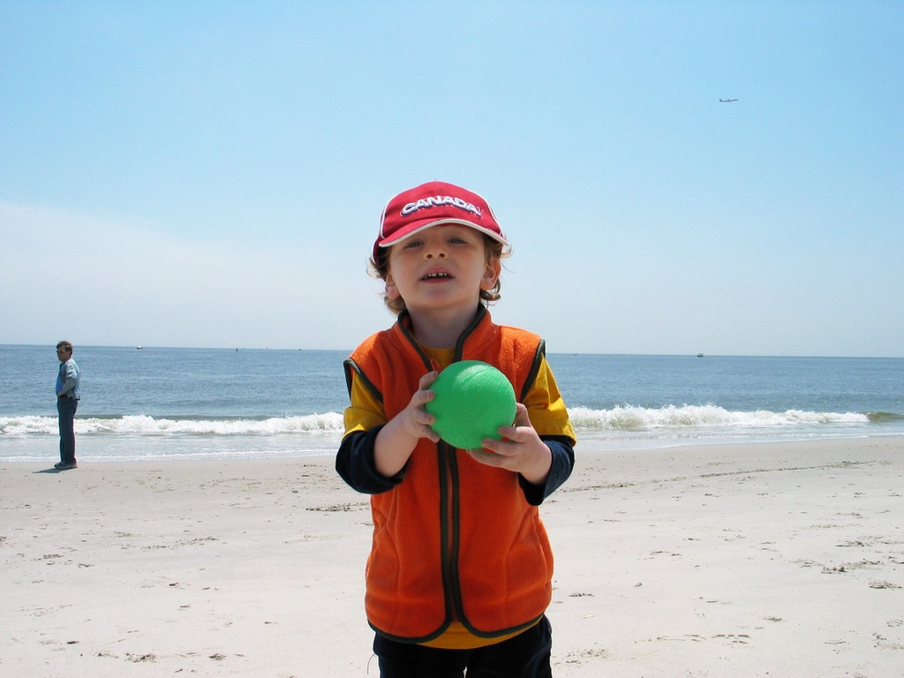
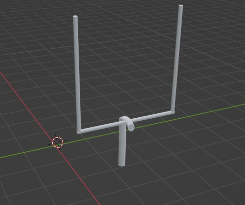
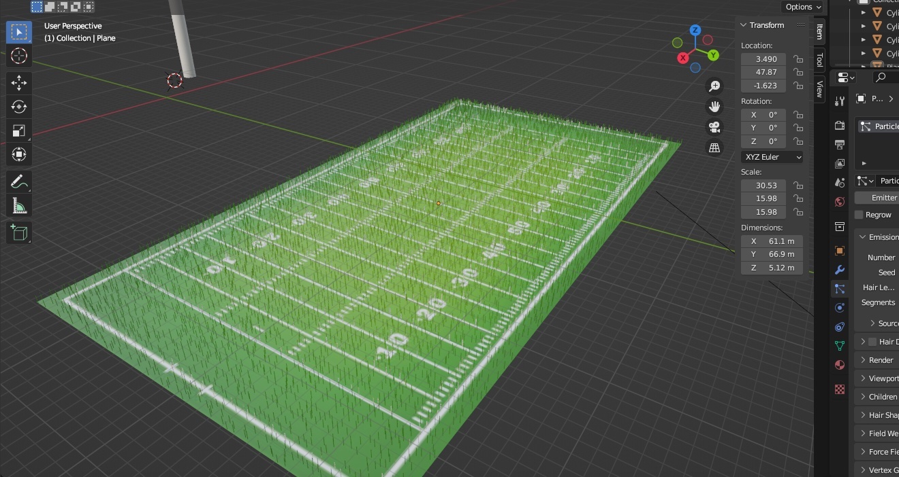

For the week of the 17th, I had my teachback on AI. I also have finished the football field in Blender, and my next step is to make goal uprights(the posts). I have also become much more acquainted with blender, learning all the shortcuts that allow me to work faster.
This week I started to understand how blender, the 3d website works. I worked with Chris, and watched some videos which helped me to gain a better understanding of what I want to do. To remind you, I want to make a miniature football field For the week of November 3rd, I have officially created the field aspect of my football field. I have used sublime, and have recieved help from Mr. Lindow, Chris, and YouTube videos to create it. The next step is to make goalposts, then bleechers, and then players.Web Update 12/08: These past couple weeks I added texture to my football field and made the goalposts. I do still have to edit the goalpost so that its even and then add yellow so that it is realistic. My next step will be the chairs that go in the stadium.
Here are my images:   